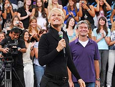

Virada Cultural Paulista tem programação até as 18h deste domingo
A Virada Cultural Paulista, que se iniciou ontem em 20 cidades do Estado, prossegue neste domingo até as 18h. Ao todo, segundo o governo de São Paulo, são mais de 500 apresentações nas 24 horas de programação. A lista de eventos inclui exibições de peças de teatro, dança, música e cinema. O governo espera 1 milhão de pessoas nas 24 horas de atividades. Os espetáculos têm entrada franca e as unidades do Sesc e do Sesi têm programação integrada ao evento. Santa Bárbara d'Oeste e Mogi Guaçu participam do evento pela primeira vez. Araraquara, Araçatuba, Assis, Bauru, Caraguatatuba, Franca, Indaiatuba, Jundiaí, Marília, Mogi das Cruzes, Presidente Prudente, Ribeirão Preto, Santos, São Bernardo do Campo, São José do Rio Preto, São João da Boa Vista, São José dos Campos e Sorocaba são as outras cidades. |
País do faz-de-conta
Durante minhas breves semanas de descanso, alguns leitores me escreveram "encomendando" artigos sobre a lei seca e o caso Daniel Dantas. Para não descontentar ninguém, arrisco uma manobra temerária: vou comentar os dois assuntos valendo-me de uma mesma chave interpretativa que me parece especialmente valiosa para entender o Brasil de hoje. Comecemos pela lei seca. Como ferrenho entusiasta daquilo que se convencionou chamar de liberdades, defendo até as últimas consequências o direito das pessoas de embriagar-se, drogar-se e fazer tudo o que bem entenderem com seus próprios corpos e mentes. Ainda assim, o conceito por trás da lei seca é inatacável: você tem o direito de beber até cair; mas, para tanto, precisa renunciar momentaneamente a outros direitos, como o de dirigir veículos automotores ou operar máquinas pesadas, posto que fazê-lo com reflexos e capacidade de decisão diminuídos pelo álcool representa um risco para terceiros. Autor: Hélio Schwartsman |
|
PSDB diz que discussão de prévias partidárias está mantidaO presidente nacional do PSDB, senador Sérgio Guerra (PSDB-PE), afirmou neste domingo que o partido mantém as discussões para a realização de uma consulta interna a fim de escolher o candidato do partido que disputará a Presidência em 2010. Fonte: FolhaOnLine.com |
Xuxa troca Som Livre por Sony A gravadora, que acompanha a "rainha dos baixinhos" há 23 anos, será trocada pela Sony Music, informa Lauro Jardim, na coluna Radar publicada na edição desta semana da revista "Veja". Conforme a publicação, o primeiro CD de Xuxa na nova gravadora sai em setembro. O último álbum da cantora, "Xuxa só para Baixinhos 8", vendeu 1 milhão de cópias desde seu lançamento, no ano passado. Ao todo, Xuxa vendeu 45 milhões de discos no período em que esteve na Som Livre. O contrato inicial assinado com a Sony é de dois anos. Fonte: http://www.folhaOnLine.com |
O que não sabemos que não sabemos
Frase antológica outro dia do ministro da Justiça, Tarso Genro, lembrou outra frase, brilhante, de Donald Rumsfeld, o ex-secretário da Defesa de George W. Bush. Primeiro, a frase de Rummy, falando sobre os perigos da ameaça terrorista contra os EUA: "Há coisas que sabemos que sabemos. E há desconhecidos conhecidos. Quer dizer, há coisas que sabemos que não sabemos. Mas há ainda desconhecidos desconhecidos. Há coisas que não sabemos que não sabemos. " O maior perigo estará sempre nos "desconhecidos desconhecidos", de onde surgem coisas como os aviões do 11 de Setembro se chocando contra as torres de Nova York. Autor: Sérgio Malbergier |